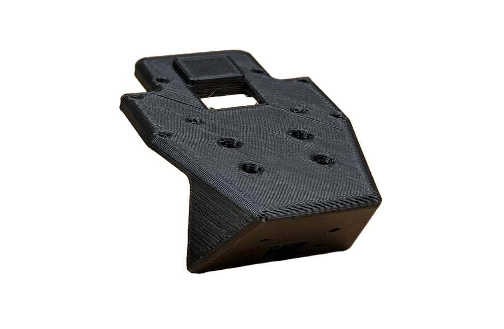
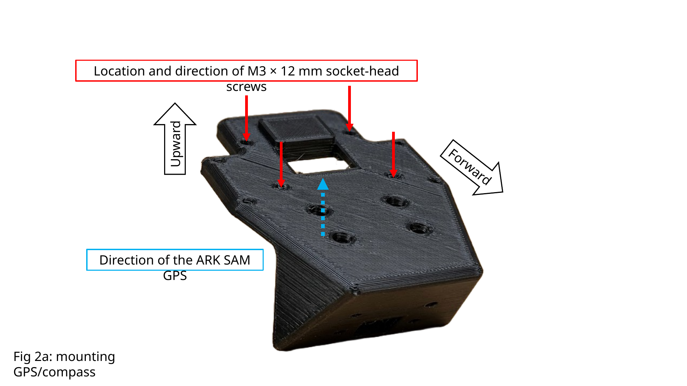

Task 2: Install GPS/Compass
Mount the ARK SAM GPS module to the camera/GPS mount and connect the 6-wire GPS/compass cable.
Day 1No blockers
Task 2: Install GPS/Compass
Mount the ARK SAM GPS module to the camera/GPS mount and connect the 6-wire GPS/compass cable.
Blockers
This task has no blockers. It can be started immediately.
None
Not marked complete
Parts required
- ARK SAM GPS module
- 6-wire GPS/compass cable
- Camera/GPS mount
- Fastener kit, subkit labeled GPS + Camera
- Four M3 × 12 mm socket-head screws
- Four M3 nylon-insert lock nuts
Tools required
- 2.5 mm Allen key
- 5.5 mm nut driver
Step 1. Prepare the GPS assembly
- Retrieve the ARK SAM GPS module, the 6-wire GPS/compass cable, the camera/GPS mount, and the fastener kit.
- Connect either end of the 6-wire GPS/compass cable to the GPS module. Leave the other end free for now.
- Open the fastener kit and remove the bag labeled GPS + Camera.
- Write your name and section on that bag, then maintain positive control of the rest of the fastener kit.
Fastener control
Only the GPS + Camera subkit is needed here. Do not mix its hardware with the rest of the fastener kit.
Only the GPS + Camera subkit is needed here. Do not mix its hardware with the rest of the fastener kit.

ARK SAM GPS module.

Camera/GPS mount used in Tasks 2 and 3.
Step 2. Mount the GPS module
- Insert the four M3 × 12 mm socket-head screws through the camera/GPS mount in the directions shown in Fig. 2a.
- Place the GPS module into the square opening on top of the mount, oriented exactly as shown in Fig. 2a.
- Install the four M3 nylon-insert lock nuts.
- Tighten the hardware in a crisscross pattern with the 2.5 mm Allen key and the 5.5 mm nut driver.
- Snug the fasteners only until the GPS module is secure. Do not overtighten.
End state
The GPS module should sit flat in the mount, and the cable should already be plugged into the module.
The GPS module should sit flat in the mount, and the cable should already be plugged into the module.

Fig. 2a. Use this figure to confirm both screw direction and GPS orientation.
Common errors
- Using the wrong hardware from the fastener kit.
- Rotating the GPS module relative to the figure before tightening.
- Tightening one corner fully before the other three corners have started.
- Leaving the cable unplugged from the GPS module.